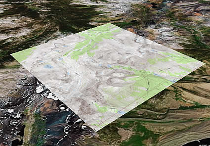
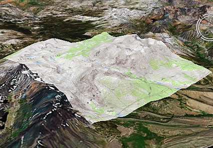
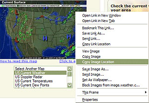
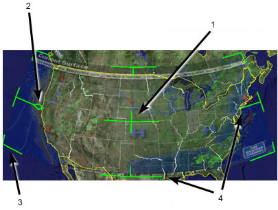

Using Image Overlays and 3D Models
With Google Earth, you can place custom images and Google SketchUp 3D models over the
view of the earth. Image overlays provide additional information about the underlying
earth imagery. For example, you can:
-
Use a map of satellite weather data that updates to reflect the most
recent weather imagery for that region.
-
Use imagery of a site plan and parcel boundaries to view the
development stages over a particular parcel.
-
Use publicly available image maps (or create your own image maps) for
such things as hiking trails, camping spots, theme parks, fishing locations, national
park boundaries, and more.
Google SketchUp is software that allows users to create 3D models and share them with
others. For more information about Google SketchUp, visit the product home page. Also refer to the following topics:
About Overlays
Note - This feature is distinct from adding a photo to Google Earth.
When you create an image overlay, you are specifying three important things:
-
What image file to display in the 3D viewer (from your computer, from
your network, or from a website)
-
How to fit or position the image boundaries to the earth data beneath
-
What the location and view of the imagery overlay is (in the same way
you do when positioning a new placemark)
The topics in this section cover:
Tip - You can hide an existing image overlay by unchecking it the
Places panel. To permanently delete an image overlay, right-click on it in the
Places panel and choose Delete. Learn more
about using places and folders.
Overlay Requirements
Overlay images can be taken from your computer, from your network, or from a web site.
The image format must be one of the following:
- BMP
- DDS
- GIF
- JPG
- PGM
- PNG
- PPM
- TGA
- TIFF
Overlays in PNG and GIF formats can be modified so that undesirable regions (such as
image boundaries) are transparent, letting the underlying imagery show through.
You can use topographical maps, weather satellite image maps, or other geographical image
data as overlays. For ideas and examples of overlays, see the Google Earth Community
bulletin board (bbs.keyhole.com).
The overlay image itself must have a North-Top orientation with simple cylindrical
projection. Simple cylindrical projection (or Plate Carrée) is a simple map
projection where the meridians and parallels are equidistant, straight parallel lines,
with the two sets crossing at right angles. (This format is also known as Lat/Lon WGS84
projection.) Because a certain amount of modifications to overlay images is allowed, you
might find that the more common UTM maps work well enough over small areas. However, for
a more precise overlay of a large region, simple cylindrical projection is required.
Note - The overlay feature is memory intensive. Consequently, images
larger than 2000x2000 pixels can reduce the performance of Google Earth and other
applications currently running on your computer. (To determine the size in pixels of an
image, display the image file in a Windows Explorer window, right-click (CTRL click on
the Mac) on it, and select Properties from the pop-up menu.) If you are having
trouble importing a large image, you can reduce its size using image editing software
such as Adobe Photoshop.
Overlay Features
Once you create an overlay, it has many of the same features available to it as a simple
placemark. With overlays, you can:
-
Email them to other people - You can email image overlays just as you
would mail other placemark data. However, keep in mind that overlay files can only be
opened by other users of Google Earth. If you want to send the overlay image as it
appears on the earth to someone who doesn't have Google Earth, email the view instead.
For details on emailing overlays, see Emailing Places Data.
When you email an overlay that references a local image, that image is automatically
included with the overlay. You do not need to include the local image in your email
attachment. This is an upgrade from Google Earth (Keyhole) version 2.2 and earlier.
-
Save them to your computer. See Saving
Places Data for details.
-
Edit their properties and settings - See Editing Places and Folders for relevant information.
In addition to common placemark features, image overlays also have the following
features:
Transparency Adjustment - You can adjust the transparency of an overlay
from completely transparent to fully opaque whenever it is selected in the viewer. By
adjusting the transparency of the overlay image, you can see how the overlay image
corresponds to the 3D viewer imagery beneath.

- Overview slider for selected overlay
Note - You can also adjust the transparency of a selected overlay if
your mouse has a scroll wheel. Click the slider (see above). Scroll down to make the
overlay more opaque. Scroll up to make the overlay more transparent, .
Terrain Integration
When you create an overlay, it completely integrates with the terrain or shape of the
land beneath if the terrain layer is turned on. For example, you might create an overlay
of Yosemite National Park and be able to view the trails in relationship to the 3D view
of the mountains. In this way, the combination of an overlay map and the 3D viewer
imagery gives more information than either one by itself.

Overlay map with terrain off

Overlay map with terrain on
-
Updates based on time or view coordinates - If you are viewing
time-sensitive imagery that changes periodically, you can set the imagery to a refresh
rate to make sure you are viewing the latest image. This is useful for viewing imagery
maps from the web where the image is automatically updated.
In addition, you can set the imagery to update depending upon your view. For example,
you might be viewing imagery from a server that only delivers imagery that can be seen
in your current 3D view. In this case, the imagery update changes whenever you navigate
the 3D viewer to a new position.
-
Draw Order - You can determine the hierarchy Google Earth uses when
you use overlapping image overlays. Google Earth displays images with a higher draw
order number in front of images with a lower draw number.
Creating an Image Overlay
This section covers three parts to creating an image overlay:
Creating an Overlay
- Position the 3D viewer in the location where you want to place the overlay
image file.
Try to position the viewer so that it corresponds in viewing altitude to the overlay.
If the overlay is of a detailed view, zoom into the
subject area so that you don't have to make large adjustments later. By contrast,
if the overlay covers a large area, make sure the entire area is encompassed in the 3D
viewer with some margins for adjusting the imagery.
- Click Add > Image Overlay or click
 . The
New Image Overlay dialog box appears.
. The
New Image Overlay dialog box appears.
- Provide a descriptive name in the Name field.
- In the Link field, enter the location of the image file you want to use as
an overlay or use the Browse button to locate it on your computer or
network.
If the image you are referencing is located on the Internet, you will need to enter the
URL for that image file. This is different from the URL for the web page
itself! If you are using Internet Explorer, you can retrieve the URL for an image
by right-clicking on the image on its web page and selecting Copy Shortcut
from the pop-up menu. At that point, you can insert your cursor in the Image
URL or Filename field and paste the information using Ctrl+V ( on the Mac).
on the Mac).

The image appears in the 3D viewer, with anchor points that you use to position it.
- Specify the descriptive information for the overlay. Descriptions for
overlays are identical to descriptions for all places data. See Writing Descriptions for details.
- Click the Refresh tab and set the correct refresh properties for your
overlay imagery. The refresh settings for overlays are identical to those described for
network links. Typically, any imagery that is updated automatically and located on a
server will need refresh properties set. For example, weather satellite image maps will
likely need to be refreshed. For details on the differences between time-based and
view-based refresh, see the description
for network links.
- Set the default transparency for the imagery using the slider. The
transparency setting for image overlays can be adjusted at any time when you are viewing
an overlay. To make it easy to position the overlay, first adjust the transparency to
achieve a good balance between seeing the imagery and the earth beneath it.
- When you select the View tab, you can modify the view settings for the
overlay just as you would any place data. See Setting
the View for details.
- Position the image in the viewer to your preferences and click OK to
complete the creation. If you later want to correct the overlay or reposition it, simply
edit the overlay as you would any other places data. See the topics in Editing Places and Folders for more information.
Positioning the Imagery in the Viewer
Once you have inserted the overlay image into the viewer, you can use the green markers
to stretch and move the image in a number of ways to get the most exact positioning
required. An overlay image will have corner and edge marks that you can use to stretch
the image, a central cross hair marker to position the image, and a triangle marker that
you can use to rotate the image.
When you select one of these markers, the cursor changes from an open hand to either a
finger-pointing hand or an arrow to indicate that an anchor point is selected. The
following illustration describes the anchor points in detail.

- Use the center cross-hair marker to slide the entire overlay on the globe and
position it from the center. (Tip: do this first.)
- Use the triangle marker to rotate the image for better placement.
- Use any of the corner cross-hair markers to stretch or skew the selected corner. If
you press the Shift key when selecting this marker, the image is scaled from the center.
- Use any of the four side anchors to stretch the image in or out of from the selected
side. If you press the Shift key when doing this, the image is scaled from the center.
Tip - Try positioning the center of the image as a reference point
first, and then use the Shift key in combination with one of the anchors to
scale the image for best positioning.
Position settings
When you select the Location tab, you can use the following settings:
-
Manual coordinates for each corner of the image overlay. This is
similar in principle to the manual setting discussed in Repositioning Placemarks, except that instead of
setting coordinates for a single point, you set coordinates for each corner of the
image overlay. You might want to use this feature if your image overlay comes from a
precise map where the exact coordinates are known.
-
Draw Order - If you have more than one overlay for a given region, you
can set the draw order for overlays to determine which image is displayed relative to
other images. Overlays with higher numbers are drawn before those with lower numbers.
-
Fit to Screen - Click this to resize the image to fit the current
view.
When you select the View tab, you can modify the view settings for the overlay just as
you would any place data. See Setting the View for
details.
Opening and Viewing Overlays
In addition to the overlays you create, you can also open and view overlays emailed to
you by other Google Earth users, or you can view overlays posted to a web server.
Opening Overlays Emailed to You
Opening overlays emailed can be done in two ways:
-
Double-click on the attachment in the email message. You'll receive a
confirmation dialog box to open the attachment in Google Earth. Click the appropriate
button to open the attachment. If Google Earth is not running, it will first start up
before loading the emailed overlay. Otherwise, it appears in the Temporary
Places folder in the Places panel and the image overlay displays in the
viewer. You can save the overlay as you would any other place data. See Saving Places Data.
-
Save the attachment to your computer. You can save the overlay file to
your computer and open it at your convenience as you would any other type of places
data. See Opening Saved Placemarks for details.
Opening Overlays on a Web Server
You can open overlays posted to a web server simply by clicking on the link that
references the overlay image. When you do this, a dialog box prompts you to select the
correct application to open the attachment. By default, Google Earth should be selected.
Click the appropriate button to confirm the selection. The image overlay appears in the
3D viewer and the item is displayed in the Temporary Places folder in the
Places panel. You can save the overlay as described above.
Posting Image Overlays to a Web Server
You can share overlay data with other Google Earth users by posting the overlay file to a
web server that other users also have access to. For example, Google Earth users can post
overlays and placemark information to the Google Earth Community BBS (bbs.keyhole.com). The rest of this section covers the
details of posting overlay data to the Google Earth BBS.
Note - You can post overlays to the Google Earth Community BBS
regardless of whether they reference local or web-based imagery data. Overlays that you
post to the BBS will automatically include images referenced from a local file system.
This is an upgrade from Keyhole 2.2.
- Right-click (CTRL click on the Mac) on your overlay and select Save As... from the
pop-up menu.
- Navigate to a location on your computer's hard drive using the Save dialog box, name
the file, and save it.
- Use a web browser to connect to bbs.keyhole.com.
You must be a registered user of the Google Earth Community to post overlay files. If you
are a first-time user of the Google Earth software, you must first register with the
Google Earth community before you can log in and post placemark files. This registration
is a separate process from your Google Earth subscription and is free of charge:
- Once on the Google Earth BBS, click on the registration link in the Login area.
- Follow the on-screen instructions to register on the site.
- You need to provide your email address in order to activate your account. After
registering, an email will be sent to that address containing your registration
information and an activation link.
- Click on the link provided in your account activation email. Your bulletin board
account is activated, and you have full access to all of the features of the Google
Earth BBS.
- Log on to the Google Earth Community web site.
- Choose a forum (threaded discussion) that is relevant to your image overlay posting.
- Click the Post link in the forum subheader.
- Enter information in the Subject and Post fields, select the check
box next to "I want to preview my post and/or attach a file" and click the
Continue button.
- Preview your posting and attach an overlay file by clicking on the Browser
button and navigating to the file.
- Click the Continue button to post your message and file.
You can place Web Mapping Service (WMS) image overlays in Google Earth. These are mapping
images that are provided through a WMS over the Internet. They can show you interesting
information, such as weather formations and conditions, topographical maps, alternate
high resolution satellite imagery and more.
To place an WMS image overlay:
- Follow Steps 1 and 2 of Creating an Image Overlay.
- In the New dialog box, click the Refresh tab.
- Click WMS Parameters. The Web Mapping Service Parameters dialog
box appears.
- Beside WMS Service, choose an appropriate service or click Add to
use a URL (website address) for a WMS. After a brief period of time, Google Earth
populates the Opaque and/or Transparent Layers fields with available
layers from the WMS you choose.
- Choose the appropriate layer(s) and click Add -> to add the
layer(s) to the Selected Layers field. This places this information in the WMS
image overlay you will see in Google Earth. To remove a layer from the Selected Layers
field, select it and click <-Remove.
- To set the order of selected layers as they appear in the 3D viewer, select
the appropriate layers in the Selected Layers field and click Move Up
or Move Down.
- When you are finished, click OK and continue from Step 3 of
Creating an Image Overlay.
Placing Google SketchUp 3D Models
To place a Google SketchUp 3D
model in Google Earth:
- Click Add > Model or press Ctrl + Shift + M
(+ Shift + M on the Mac). The New Model dialog box
appears. Adding a model is very similar to adding a
placemark.
- Altitude settings for 3D models are identical to placemark altitude
settings. For more information, see Setting
Altitude.
For additional information: